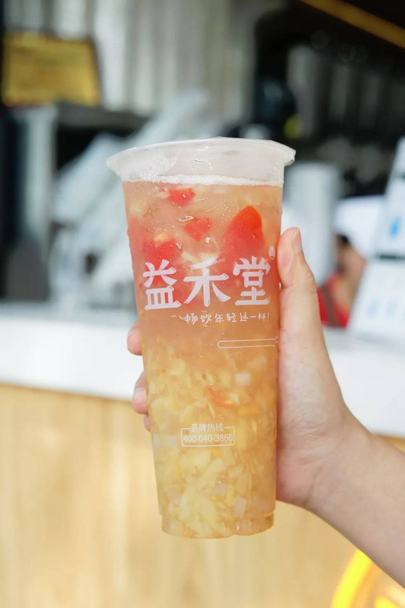

花值得的钱，享受值得的生活，赚可以赚的钱
-
新闻中心
益禾堂奶茶加盟，究竟有着什么样的魅力
面对着众多的奶茶品牌，市场上的竞争也变得更加
白热化，很多的消费者和投资者应该如何进行选择才能在这么多复杂的品牌中找到最满意的呢?益禾堂作为奶茶行业
中的佼佼者，其实从各方面而言，还都非常符合大众的期待。首先，益禾堂采用创新配方，采用高山原茶，用优质矿
泉水冲泡，再加上优质纯净奶源、新鲜水果、坚果、杂粮等食材，制作出口感清香，奶香浓郁的烤奶系列，还富含多
种营养元素，营养并有很大的流失，这是很多品牌都无法达到的。

益禾堂加盟店的产品系列非常多元化，十几个系
列，上百种单品美食不但符合了消费者的需求，同时也让其销量得到了稳步上升，所以每个加盟商
都可以很轻松就赚得盆满钵满。益禾堂面对逐渐白热化的竞争趋势，推出了适合中小型投资者的多
个加盟方案，让许多投资者都特别想加入。加盟益禾堂总部会为加盟商提供专业贴心的服务，优质
的产品，精准的市场定位。目前，益禾堂加盟越来越多，已有上千位加盟商实现了创业目标。益禾
堂奶茶的出现不仅为消费者带来了高品质的美味产品，以低投入、高收益回馈给投资者。益禾堂官
网必将传统茶文化发扬光大，势必会不断努力，让品牌成为国人引以为傲的国际名品。
作为目前我国奶茶市场中的人气王，益禾堂奶茶有
着巨大的市场前景，各地都有忠实消费群体。益禾堂加盟店，最先进的经典益禾烤奶茶店，引领内地奶茶行业的发展。
益禾堂总部从传统经典的奶茶制作工艺中吸取经验必加以改良，并且把消费者对于益禾堂奶茶的需求融入其中，打造
高品质奶茶，得到广大消费者的一致欢迎与认可。益禾堂官网为无数创业人士提供了很好的平台，创业从这里开始。
因为开益禾堂加盟店投资也不大，完全能能够满足消费者的需求，销量十分惊人，所以无需担心生意的好坏。
上一篇：想开奶茶店，开一家实力品牌益禾堂需要多少钱
下一篇：益禾堂奶茶店有什么优势，开店经营有保障
返回首页